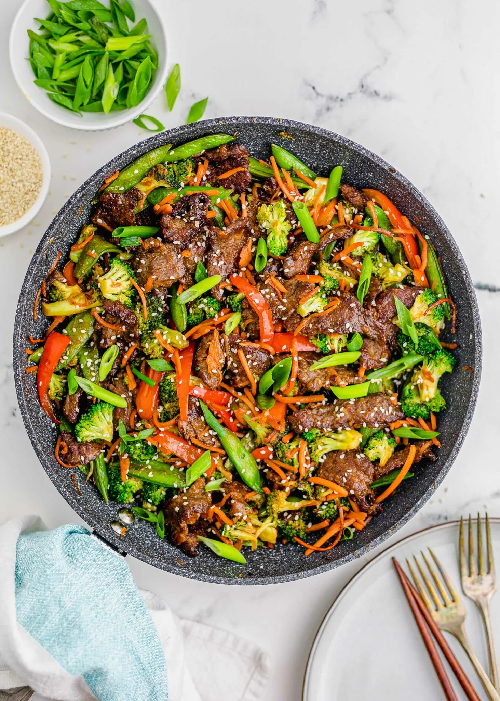

Stir Fry Recipe

Description
This stir fry recipe is all about the sauce a combination of umami and sugar set it off.
1lb Steak like flank alternatively chicken
2 tbsp
1 orange
1 Mexican Lager
2 cloves of garlic
Salt and pepper
1 small bunch fresh cilantro
1 tablespoon olive oil
2 tsp cumin
1 tbsp dark brown sugar
Steps
- Mix together all ingredients in a bowl
- Add steak and let marinade for 2-24 hours
- Sear steak